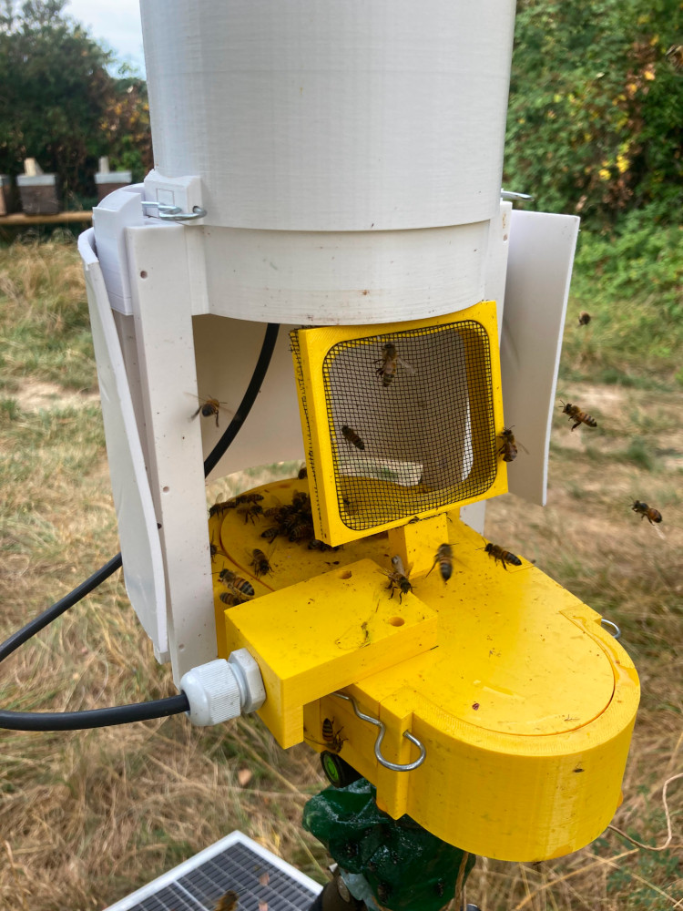

VelutaMonitor
For my third year of HBO I decided to go with ESA (Emmbedded System design and Automation) again, this being the semester "Internet Of Things"or IOT. For this semester we where tasked with choosing a job from a list of available jobs, most of these jobs came from outside the school. Our job ended up being from hobby beekeepers. One from Zwolle and one from Switserland.
For this project the monitor itself was already setup, however they where
only able to detect and capture hornets, they where not able to communicate nor calculate the possition of a nest. Our project for this was then to create a module that, when a hornet has been detected, would keep track of said hornet and communicate this to other monitors in the area.

Our project ended up doing just that, it would keep track of the flying time of each individual hornet that would visit the monitor and, using a formula, calculate a distance to the nest.
With this we can then draw a circle around the monitor for a location of the nest, combine this with 2 other monitors and a presice point can be calculated.
Some of our best results for this where off by around 3 meters, which was well within' the 10 meter limit we set.
When it was about time to finish this project we desided to take part in a competition held every half year by our school. This competition is Winnovation and we choose to take part in the categorie green, seeing as our project helps the european honeybee. We ended up winning this competition for which we received a LEGO model (which I designed) and the alderman of Zwolle congraduated us. (Person all the way to the right with me next to him)
When it was about time to finish this project we desided to take part in a competition held every half year by our school. This competition is Winnovation and we choose to take part in the categorie green, seeing as our project helps the european honeybee. We ended up winning this competition for which we received a LEGO model (which I designed) and the alderman of Zwolle congraduated us. (Person all the way to the right with me next to him)
To finish off the project we where asked by De Stentor to do an interview regarding this project.
I managed the request and got us to do the interview
on school grounds, including the picture taken.
To read the article you do need an account and it's only available in Dutch.
on school grounds, including the picture taken.
To read the article you do need an account and it's only available in Dutch.